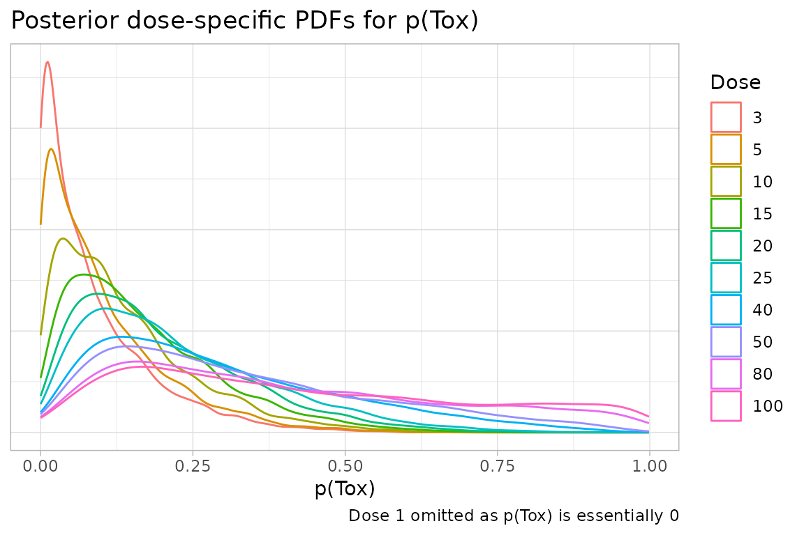

suppressPackageStartupMessages({
library(crmPack)
library(knitr)
library(kableExtra)
library(tidyr)
library(magrittr)
library(dplyr)
})Introducing tidy methods to crmPack
The latest release of crmPack introduces
broom-like tidy methods for all crmPack
classes. These methods convert the underlying S4 classes to (lists of)
tibbles. This should facilitate reporting of all aspects of
CRM trials as well as making it easier to integrate crmPack
with other packages such as ggplot2.
Basic approach
The following is the general approach we take to tidying
crmPack classes:
- All slots that are not functions are converted to
tibbles or a list oftibbles. - If the slot’s value is a
list, these rules are applied to each element of the list in turn. - If the slot’s value is scalar, the slot is converted to a 1x1
tibble. This will ease downstream operations such asrow_binding. - If the object being tidied contains multiple slots of (potentially)
different lengths, the result is a list of
tibbles. The list may be nested to multiple levels. (See, for example,LogisticLogNormal.) - The column names of the tidied
tibblecorrespond to the slot names of the parent object.- Exception: where the slot has name in the plural and contains a
vectororlist, the column name will be singular. See, for example,CohortSizePartsbelow.
- Exception: where the slot has name in the plural and contains a
- When the value of a slot has not been set, a zero-row
tibbleis returned. - When the value of a slot has scalar attributes, these attributes are
added as columns of the
tibble, whose name is the name of the attribute and whose value is the value of the attribute for every row of the tibble. Vector attributes can be added, by default, as a nested tibble. The nested tibble is 1 row x n column, with column names defined by the name of the attribute and values given by the value of the corresponding attribute. -
tbl_<className>is prepended to the class of the (list of) tidytibble(s).
Exceptions
- Where a vector slot (or series of vector slots) define a range ()for
example, the
intervalsslot in variousCohortSizeandIncrementsclasses, then the naming convention described above is not followed. Instead, columns namedminandmaxdefine the extent of the range.
Examples
CohortSizeConst is a trivial example and illustrates the
default approach for all classes.
CohortSizeConst(size = 3) %>% tidy()
#> # A tibble: 1 × 1
#> size
#> <int>
#> 1 3IncrementsRelative illustrate how ranges are
handled.
IncrementsRelative(
intervals = c(0, 20),
increments = c(1, 0.33)
) %>%
tidy()
#> # A tibble: 2 × 3
#> min max increment
#> <dbl> <dbl> <dbl>
#> 1 0 20 1
#> 2 20 Inf 0.33CohortSizeMax contains a slot whose value is a list.
cs_max <- maxSize(
CohortSizeConst(3),
CohortSizeDLT(intervals = 0:1, cohort_size = c(1, 3))
)
cs_max %>% tidy()
#> [[1]]
#> # A tibble: 1 × 1
#> size
#> <int>
#> 1 3
#>
#> [[2]]
#> # A tibble: 2 × 3
#> min max cohort_size
#> <dbl> <dbl> <int>
#> 1 0 1 1
#> 2 1 Inf 3
#>
#> attr(,"class")
#> [1] "tbl_CohortSizeMax" "tbl_CohortSizeMax" "list"The Samples class likely to the most useful when making
presentations not yet supported by crmPack directly.
options <- McmcOptions(
burnin = 100,
step = 1,
samples = 2000
)
emptydata <- Data(doseGrid = c(1, 3, 5, 10, 15, 20, 25, 40, 50, 80, 100))
model <- LogisticLogNormal(
mean = c(-0.85, 1),
cov =
matrix(c(1, -0.5, -0.5, 1),
nrow = 2
),
ref_dose = 56
)
samples <- mcmc(emptydata, model, options)
tidySamples <- samples %>% tidy()
tidySamples %>% head()
#> $data
#> # A tibble: 2,000 × 10
#> Iteration Chain alpha0 alpha1 nChains nParameters nIterations nBurnin nThin
#> <int> <int> <dbl> <dbl> <int> <int> <int> <int> <int>
#> 1 1 1 -1.32 1.74 1 1 2100 100 1
#> 2 2 1 -1.59 7.83 1 1 2100 100 1
#> 3 3 1 -0.809 2.83 1 1 2100 100 1
#> 4 4 1 0.228 2.01 1 1 2100 100 1
#> 5 5 1 -2.29 7.38 1 1 2100 100 1
#> 6 6 1 -0.463 2.83 1 1 2100 100 1
#> 7 7 1 -1.59 30.4 1 1 2100 100 1
#> 8 8 1 -0.584 0.898 1 1 2100 100 1
#> 9 9 1 0.680 0.820 1 1 2100 100 1
#> 10 10 1 -3.34 36.3 1 1 2100 100 1
#> # ℹ 1,990 more rows
#> # ℹ 1 more variable: parallel <lgl>
#>
#> $options
#> # A tibble: 1 × 5
#> iterations burnin step rng_kind rng_seed
#> <int> <int> <int> <chr> <int>
#> 1 2100 100 1 NA NAUsing tidy crmPack data
Tidy crmPack data can be easily reported using
knitr or similar packages in the obvious way.
Cohort size
The cohort size for this trial is determined by the dose to be used in the current cohort according to the rules described in the table below:
CohortSizeRange(
intervals = c(0, 50, 300),
cohort_size = c(1, 3, 5)
) %>%
tidy() %>%
kable(
col.names = c("Min", "Max", "Cohort size"),
caption = "Rules for selecting the cohort size"
) %>%
add_header_above(c("Dose" = 2, " " = 1))| Min | Max | Cohort size |
|---|---|---|
| 0 | 50 | 1 |
| 50 | 300 | 3 |
| 300 | Inf | 5 |
Or presentations not directly supported by crmPack can
be easily produced. Here, we create plots of the dose-specific PDFs for
prior probabilities of toxicity after the first DLT is observed in a
fictional trial.
options <- McmcOptions(
burnin = 5000,
step = 1,
samples = 40000
)
data <- Data(
doseGrid = c(1, 3, 5, 10, 15, 20, 25, 40, 50, 80, 100),
x = c(1, 3, 5, 10, 15, 15, 15),
y = c(0, 0, 0, 0, 0, 1, 0),
ID = 1L:7L,
cohort = as.integer(c(1:4, 5, 5, 5))
)
model <- LogisticLogNormal(
mean = c(-1, 0),
cov =
matrix(c(3, -0.1, -0.1, 4),
nrow = 2
),
ref_dose = 56
)
samples <- mcmc(data, model, options)
tidySamples <- samples %>% tidy()
# The magrittr pipe is necessary here
tidySamples$data %>%
expand(
nesting(!!!.[1:10]),
Dose = data@doseGrid[2:11]
) %>%
mutate(Prob = probFunction(model, alpha0 = alpha0, alpha1 = alpha1)(Dose)) %>%
ggplot() +
geom_density(aes(x = Prob, colour = as.factor(Dose)), adjust = 1.5) +
labs(
title = "Posterior dose-specific PDFs for p(Tox)",
caption = "Dose 1 omitted as p(Tox) is essentially 0",
x = "p(Tox)"
) +
scale_colour_discrete("Dose") +
theme_light() +
theme(
axis.ticks.y = element_blank(),
axis.text.y = element_blank(),
axis.title.y = element_blank()
)
Environment
sessionInfo()
#> R version 4.5.0 (2025-04-11)
#> Platform: x86_64-pc-linux-gnu
#> Running under: Ubuntu 24.04.2 LTS
#>
#> Matrix products: default
#> BLAS: /usr/lib/x86_64-linux-gnu/openblas-pthread/libblas.so.3
#> LAPACK: /usr/lib/x86_64-linux-gnu/openblas-pthread/libopenblasp-r0.3.26.so; LAPACK version 3.12.0
#>
#> locale:
#> [1] LC_CTYPE=en_US.UTF-8 LC_NUMERIC=C
#> [3] LC_TIME=en_US.UTF-8 LC_COLLATE=en_US.UTF-8
#> [5] LC_MONETARY=en_US.UTF-8 LC_MESSAGES=en_US.UTF-8
#> [7] LC_PAPER=en_US.UTF-8 LC_NAME=C
#> [9] LC_ADDRESS=C LC_TELEPHONE=C
#> [11] LC_MEASUREMENT=en_US.UTF-8 LC_IDENTIFICATION=C
#>
#> time zone: Etc/UTC
#> tzcode source: system (glibc)
#>
#> attached base packages:
#> [1] stats graphics grDevices utils datasets methods base
#>
#> other attached packages:
#> [1] dplyr_1.1.4 magrittr_2.0.4 tidyr_1.3.1 kableExtra_1.4.0
#> [5] knitr_1.50 crmPack_2.0.0.9002 ggplot2_4.0.1
#>
#> loaded via a namespace (and not attached):
#> [1] utf8_1.2.6 sass_0.4.10 generics_0.1.4
#> [4] xml2_1.5.0 futile.options_1.0.1 lattice_0.22-7
#> [7] stringi_1.8.7 digest_0.6.39 evaluate_1.0.5
#> [10] grid_4.5.0 RColorBrewer_1.1-3 mvtnorm_1.3-3
#> [13] fastmap_1.2.0 jsonlite_2.0.0 backports_1.5.0
#> [16] formatR_1.14 gridExtra_2.3 purrr_1.2.0
#> [19] viridisLite_0.4.2 scales_1.4.0 textshaping_1.0.4
#> [22] jquerylib_0.1.4 Rdpack_2.6.4 cli_3.6.5
#> [25] rlang_1.1.6 rbibutils_2.4 futile.logger_1.4.3
#> [28] parallelly_1.45.1 withr_3.0.2 cachem_1.1.0
#> [31] yaml_2.3.10 parallel_4.5.0 tools_4.5.0
#> [34] coda_0.19-4.1 checkmate_2.3.3 lambda.r_1.2.4
#> [37] vctrs_0.6.5 R6_2.6.1 lifecycle_1.0.4
#> [40] stringr_1.6.0 GenSA_1.1.14.1 fs_1.6.6
#> [43] htmlwidgets_1.6.4 ragg_1.5.0 rjags_4-17
#> [46] pkgconfig_2.0.3 desc_1.4.3 pkgdown_2.2.0
#> [49] pillar_1.11.1 bslib_0.9.0 gtable_0.3.6
#> [52] glue_1.8.0 systemfonts_1.3.1 xfun_0.54
#> [55] tibble_3.3.0 tidyselect_1.2.1 rstudioapi_0.17.1
#> [58] dichromat_2.0-0.1 farver_2.1.2 htmltools_0.5.8.1
#> [61] labeling_0.4.3 rmarkdown_2.30 svglite_2.2.2
#> [64] compiler_4.5.0 S7_0.2.1